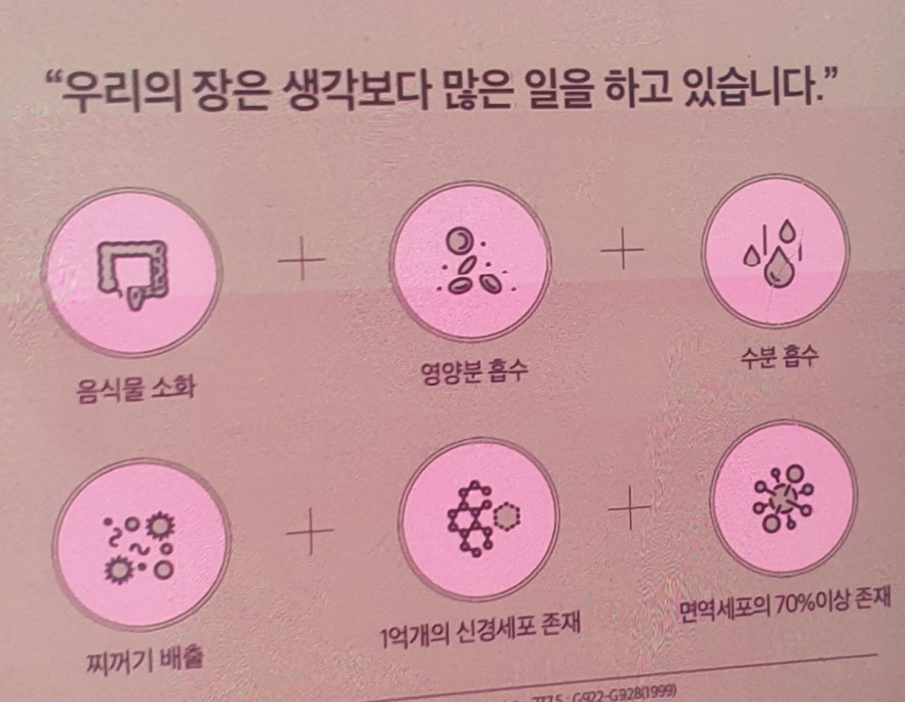

암 자연치료는 불가능하지 않습니다. 많은 사람들이 암에 걸리면 시한부 삶이라고 생각하고 암은 죽는 병이라고 생각하지만 그렇지 않습니다. 암에 걸린다고 반드시 죽는 것이 아닙니다. 오히려 암을 두려워 하는 그 두려움이 죽음의 원인으로 작용합니다.
암이 죽음의 원인으로 작용할 거 같은데 암이 죽음의 원인이 아니라 두려움이 죽음의 원인이라고 하는게 이해가 안 될 것입니다. 이런 부분은 사실 법칙과 같은 이야기입니다. 예전에 무술 영화를 볼 때 사부가 제자에게 항상 하는 이야기, 무술에서 정말 중요한 것은 기술이 아니라 기술을 바쳐주는 다른 것들"이라는 내용을 보았습니다